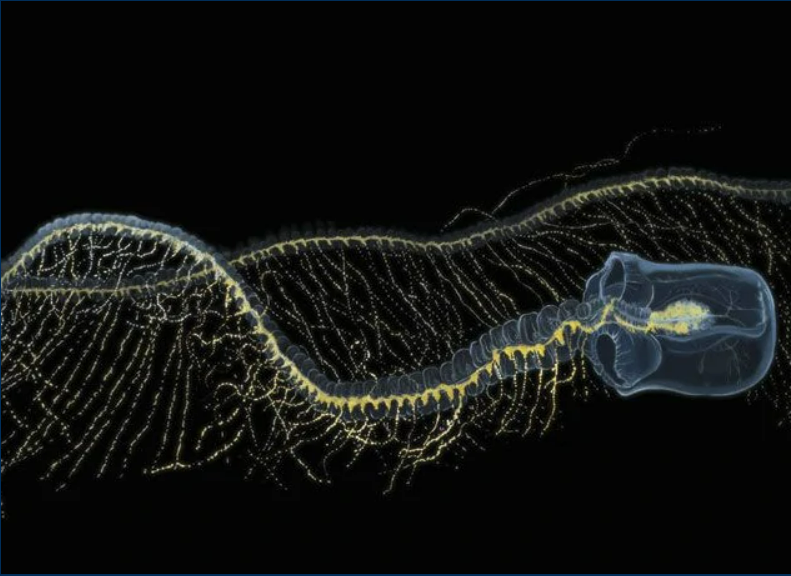
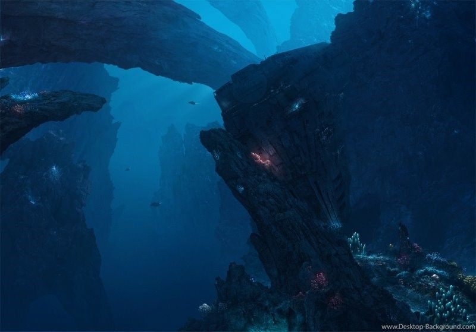

The Praya dubia, or giant siphonophore, is an invertebrate which lives in the deep sea at 700 m to
1,000 m below sea level. It has been found off the coasts around the world, from Iceland in the North
Atlantic, to Chile in the South Pacific. Praya dubia is a member of the order Siphonophorae within the
class Hydrozoa. Siphonophores are free‐swimming colonial hydrozoans (Cnidaria) composed of asexually produced
multicellular zooids. These zooids, which are homologous to solitary animals, are functionally specialized and
arranged in complex species‐specific patterns. Zooids cannot survive on their own, relying on symbiosis in order for
a complete Praya dubia specimen to survive. They are a collection of highly specialized working parts. Some parts catch prey,
others digest food, some parts reproduce and others direct the action by swimming. This siphonophore can also be bioluminescent —
it creates its own light. When it bumps against something, its stem glows with a bright blue light or red light.